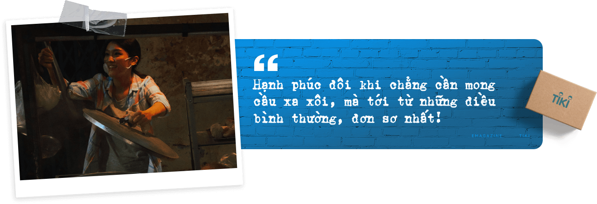

Người người “mang tiền về cho mẹ", nhưng mình lại chẳng thể
Chuyện của những đứa trẻ cả năm quẩn quanh góc phố
Từ những bữa tiệc cuối năm lung linh, thu về trong căn phòng nhỏ
Tết rét mướt sau khung cửa, là khi mình phải xa chồng, con
“Trước đây, tôi chưa từng thấy vui đến thế, chỉ vì được ăn tô hủ tiếu full topping sau 5 tháng dài giãn cách, hay vì anh shipper giao đủ 10 ký gạo đến ngay trước lệnh đóng cửa siêu thị….” Một năm thật dài sắp đi qua, trong những tháng ngày nhiều âu lo, đóng khung sau ô cửa sổ thành phố, bạn có nhận ra lòng bạn cũng đã lấp lánh vui chỉ những điều rất đỗi bình thường?
“...Những đứa trẻ sẽ phải đi xa nhà
Sẽ phải nếm rất nhiều mặn, ngọt, cay, chua, đắng
Mẹ chỉ muốn chúng mày phải tự lo cho mình
Về đây mà gầy là mẹ cho ăn đòn…”
Hương “facetime” với tôi trong khi đang nghe ca khúc mới của Đen, và vừa hay lại rơi đúng vào đoạn nhạc nói lên tâm trạng cô bạn tôi như thế. Vừa trò chuyện, cô nàng vừa… cười trừ: “Năm nay đó, muốn về để mẹ cho ăn đòn cũng không được đâu nè”, bởi vì Hương không đặt được tấm vé về quê ăn Tết và đành phải ở lại thành phố.
Và cứ thế, Hương kể với tôi tâm trạng nhớ nhà, xa quê, những tâm sự chảy trôi bất tận. Là câu chuyện về những buổi tối mệt nhoài trở về căn chung cư nơi thành thị, giữa bốn bức tường khép kín, cửa đóng then cài, hay là khi cả hai hồi tưởng về những ngày đối mặt với chênh vênh, hoang mang khi dịch bệnh diễn biến phức tạp. Những tưởng đến cuối năm, khi tất cả đã tạm yên, mình lại được trở về vui vầy bên gia đình, ba mẹ…
Vậy mà không…, lại là xa nhau sau bao tháng ngày nhớ mong.
Mà không chỉ Hương hay tôi, đó là câu chuyện chung của rất nhiều bạn bè xung quanh chúng tôi - những người vì lý do này hay khác mà chẳng thể hội ngộ gia đình dù là trong ngày Tết đến, xuân về.
Ở xóm trọ nơi tôi ở, có hai bạn nhỏ rất dễ thương con chú Đạt là Tí và Su (thú thực tôi cũng không nhớ tên thật hai nhỏ là gì nữa, vì ở xóm gọi miết quen rồi). Gia cảnh khó khăn, ba tụi nhỏ làm công nhân cũng đi sớm về khuya suốt, ít có thời gian chăm các con, vậy mà các em ngoan lạ. Bất cứ ai đi từ đầu ngõ vào, là tụi nhỏ chào ran, nụ cười trong sáng xua tan bao mệt nhọc của các cô, các bác trong xóm.
Ba các em đã phải rất cố gắng mới có thể xoay sở tiền trang trải cho hai đứa đi học. Ngoài những lúc phụ ba nấu cơm, rửa bát, tụi nhỏ đi học, và mỗi lần chúng ùa về là cả xóm râm ran. Tí và Su vui vì được đến trường, được chơi với bạn bè, được sống hồn nhiên đúng với lứa tuổi của hai em, và niềm vui ấy cũng lan khắp cả xóm trọ.
Thế rồi dịch bệnh xảy ra, công trình nằm im cả tháng trời, ba tụi nhỏ mất việc. “Phúc bất trùng lai, họa vô đơn chí", chú Đạt còn bị tai nạn ngã xe, phải bó bột ngồi xe lăn liền tháng nay. Lại cũng vì dịch, tụi trẻ con không được đến trường. Tí và Su quanh quẩn trong nhà, quanh góc phố, chẳng dám đi ra ngoài. Cũng đã lâu lắm rồi, tôi chẳng còn nghe thấy tiếng đám trẻ đi học về, ríu rít. Thương lắm…
Anh Vinh - anh họ tôi lên thành phố làm đã 3 năm nay, không quản vất vả, đêm hôm với mơ ước thoát ra khỏi cuộc sống khó khăn, đỡ đần ba mẹ. Niềm vui với anh là những giờ đến công ty, giao lưu với đồng nghiệp, để thoát ra khỏi những khoảnh khắc 1 mình giữa những ô cửa thành thị.
Thế mà dịch bệnh lại “đẩy” anh về giữa 4 bức tường. Những ngày cận kề Tết, anh tôi nhận email của công ty, là Year End Party sẽ tổ chức online. Gọi cho cô em họ ở cùng thành phố, anh tôi ngậm ngùi: “Nhớ lắm những lần gặp hội đồng nghiệp, được lên đồ xúng xính đi tiệc, được vinh danh vì thành quả ‘cày kéo'. Cả năm làm việc cũng chỉ mong một lần như này… Thế mà…”.
Cũng giống như chú Đạt, cô Tuyết là một trong những người hàng xóm dễ mến nhất xóm. Cô cũng là công nhân, cũng đi từ sáng tới tối để kiếm tiền trang trải việc học của con gái dưới quê. Nhưng năm nay, cô cũng không thể về nhà bên gia đình. “Cả năm qua, cô vừa đi làm, vừa lo lắng. Có thời điểm ở xưởng có F0, công nhân ‘3 tại chỗ’ để đảm bảo sản xuất, vất vả lắm. Tết này, công nhân xí nghiệp ở lại nhiều, cô cũng tăng ca thêm, để kiếm thêm chút thu nhập gửi về cho bố con nó ở nhà".
Chạnh lòng chứ, vì không thể trực tiếp ôm bé Na, không thể nhìn thấy nụ cười của ông bà, xóm giềng khi mình mang quà từ thành phố về. Nhưng biết làm sao, khi cô còn phải cố gắng vì cả một tương lai của con gái phía trước?
Phải chăng cả năm 2021, và Tết cũng sẽ như vậy? Là những tháng ngày nhìn nhau qua ô cửa sổ, hay là giờ phút trốn mình trong những “hộp diêm" bé xíu - nơi niềm vui mãi chẳng chịu “đánh lửa", thắp sáng và sưởi ấm những ngày ảm đạm?
2021 là năm mà đại dịch “càn quét", là năm của những âu lo, chênh vênh… nhưng chẳng vì thế mà thiếu đi những niềm vui lấp lánh. Mà có lẽ cũng chỉ đến giây phút này, chúng ta mới nhận ra một điều giản dị: Hạnh phúc đôi khi chẳng cần mong cầu xa xôi, mà tới từ những điều bình thường, đơn sơ nhất!

Khi đang Facetime với tôi hôm qua, kể lể về một năm dài thật dài với bao dự định phải tạm gác lại, Hương bất giác vui hẳn lên vì nhận được quà. “Chờ tui chút nha!”, cô nàng bỏ ngang cuộc gọi, rồi hớn hở quay lại, khoe quà của gia đình gửi lên. Một chiếc hộp vuông vức với màu bìa các tông cứng cáp và những dòng chữ xanh chạy ngang qua. Mở bên trong ra, thì toàn những món ăn, mà cô nàng yêu thích: Giò chả, dưa hấu, bánh kẹo… mà mẹ Hương nhờ em trai đặt ship qua Tiki. Đã thế, Hương còn khoe tôi tin nhắn của shipper siêu dễ thương: “Em gọi giao đồ không thấy chị nghe máy. Em đợi chị, chị gái cứ từ từ xuống nhé!”.
Tôi thấy mình bất giác mỉm cười. Trong suốt năm qua, giữa những lần giãn cách, sự quan tâm giản dị như thế cũng từng làm tôi ấm lòng. Và câu chuyện ấy không chỉ của riêng ai, khi tôi chợt nhớ ra vô vàn khoảnh khắc giản đơn mà mình từng được chứng kiến, nghe kể trong mùa dịch. Trùng hợp thay, rất nhiều trong số đó gắn với shipper - những người được phép di chuyển trong mùa dịch - những “đốm lửa xanh" bình yên, hạnh phúc giữa thành phố khi ấy còn lắm âu lo.
Câu chuyện của Tí và Su nhà bên chẳng hạn. Sáng hôm đó, tôi còn nhớ mãi cảnh tụi trẻ đứng đầu ngõ ngóng hoài, lòng tự hỏi: “Không biết có chuyện gì mà hai đứa nó háo hức quá vậy!”. Đến khi nghe tiếng reo vui, tôi mới nhận ra: “Ra là chú shipper đẹp trai mang hàng tới cho tụi nhỏ". Mà càng ấm áp tình người hơn, khi anh chàng nọ dựng xe đầu hồi, bê hẳn thùng vào tận nhà hai đứa, vì biết là “ba em đang đau chân không đứng dậy được". Tiếng cười giòn tan hơn nữa, khuấy động cả không gian trong veo buổi sớm và như ươm nắng rực rỡ lên khắp con ngõ khi hai đứa khui thùng ra xem: Đầy đủ sách giáo khoa, vở ô ly, bút… những món mà các bạn nhỏ ấy đã mong ngóng từ lâu để có thể học online, theo kịp bài vở trên lớp.
Tôi cũng bật cười vì nhớ tới ông anh họ của mình, khi anh tôi kể: “Có lần đang làm online, trên đóng vest, dưới quần đùi mà lao như bay ra nhận ship vì mong quá! Vui quên sầu luôn vì ship đến quá nhanh. Mà em biết là gì không, vừa đủ đồ để tham gia bữa tiệc cuối năm online cùng công ty chứ gì nữa?”. Anh tôi khoe những bức ảnh anh ấy chụp lại, đăng trên Facebook, cũng đủ đầy như ai từ nến, đồ uống tới mũ “party". Bữa tiệc mùa cách ly tuy xa mặt mà chẳng cách lòng, và hẳn sẽ còn được kể lại mãi trong những lần trà dư tửu hậu sau này!
Một câu chuyện vui nữa khiến tôi cũng muốn cười thật lớn là chuyện của cô Tuyết. Tôi nhớ những ngày cuối năm bận rộn, mỗi khi về qua xóm trọ, tôi nhìn thấy gương mặt thẫn thờ vì nhớ con của cô và muốn giúp cô thật nhiều nhưng chẳng làm gì được. Thế mà hôm nọ, thấy các bà hàng xóm kể, cô nhận được một hộp quà ship từ Tiki tới.
Đan xen giữa thành phố của hàng triệu ô cửa sổ khép kín, vẫn có những bóng áo xanh chuyên chở niềm vui. Những shipper Tiki tận tâm, với nụ cười luôn nở trên môi, đã, đang và sẽ mang tới thật nhiều “gói quà xanh”, mang theo hạnh phúc bình dị, nhỏ bé.
Thành phố sẽ vẫn luôn có muôn nẻo đường, ngày tháng phải chờ đợi, cách xa sẽ luôn là những tháng ngày dài nhất. Nhưng những khoảng cách sẽ được thu lại gần, những ô cửa, căn hộ lại sẽ được thắp sáng, sưởi ấm bằng tình yêu thương, bằng những niềm vui bé nhỏ.
Để Tết luôn vui dù bạn ở đâu, hãy để “ngọn lửa xanh” của niềm yêu thương sưởi ấm những ô cửa thành thị khi năm mới về!
TIKI 12 NĂM VẬN CHUYỂN NHỮNG NIỀM VUI
Tìm ở đâu xa khi những ấm áp luôn hiện hữu trong những quan tâm thường nhật? Và trong suốt 12 năm qua, Tiki không chỉ chuyên chở những "thùng hàng xanh", mà còn chuyên chở niềm vui, ấm áp, thắp lên “ngọn lửa" xanh sưởi ấm cho mọi trái tim vui.
Tết 2022, Tiki vẫn cùng bạn trao gửi yêu thương với dịch vụ giao hàng xuyên Tết tiện lợi. Đón một cái Tết ấm áp cùng Tiki ngay TẠI ĐÂY.